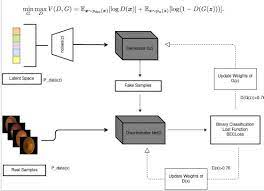
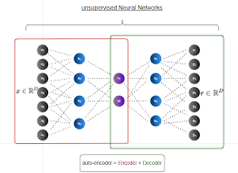
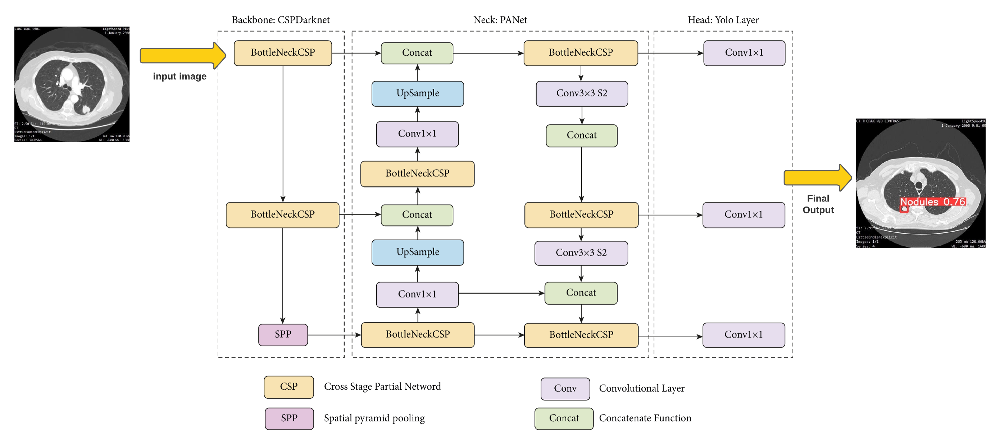
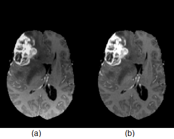
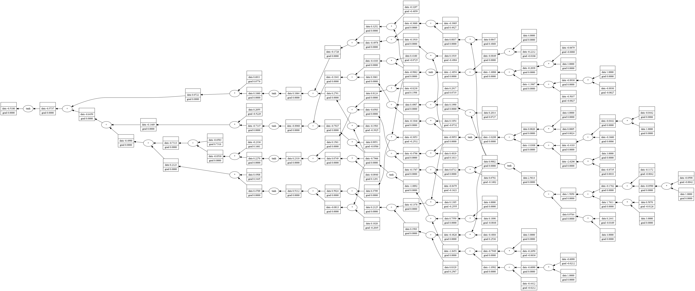

Research Experience
-
DCGAN for Enhancing Eye Diseases Classification
we present Deep Convolutional Generative Adversarial Network (DCGAN) method that generates synthetic medical images. In addition, using GMD (Glaucoma, Myopia, and Diabetic retinopathy) model to improve eye diseases classification and using pytorch frameworke in this project and use the data in other mission of improve classification.
Relevant Papers: [ceur2021],GitHub -
Medical Image Enhancement Based on Convolutional Denoising Autoencoders and GMD Model
 eye diseases include Glaucoma, Myopia and Diabetic retinopathy are very serious health problems in the life of people. Timely, early diagnosis of these diseases is very important to avoid blindness. There are many methods have been developed for this purpose. In this paper, we demonstrate the using of Convolutional Denoising Autoencoders (CDAE) to enhance the images we obtained from DCGAN (which we obtained from previous paper). In addition, using GMD model (Glaucoma, Myopia and Diabetic retinopathy)
Relevant Papers: [ceur2021] -
Addressing Algorithmic Uncertainty in Tumor Segmentation An Ensemble Learning Approach to BraTS Challenge 2020:
 automatic segmentation we will use Unet3d To predict the age and number of days of survival:
first,
we will train the auto-encoder to scale the space from 4 240 240 * 150 to 512, and then
extract the statistical values,
and hidden representations for each identifier in the data encoded by the pre-trained
auto-encoder and based on this tabular data we will train SVR
automatic segmentation we will use Unet3d To predict the age and number of days of survival:
first,
we will train the auto-encoder to scale the space from 4 240 240 * 150 to 512, and then
extract the statistical values,
and hidden representations for each identifier in the data encoded by the pre-trained
auto-encoder and based on this tabular data we will train SVR
Relevant Papers: [AICAS2020]GitHub -
Attention Filter Gate U-Net: Learning from Frequency domain for Medical image Segmentation:
 The aim
was to improve the existing Attention Gate used in U-Net for medical image segmentation. The
goal was to reduce the
computational cost of training the model, improve feature extraction, and handle the problem
of matrix multi- plication
used in CNN Under Progress
The aim
was to improve the existing Attention Gate used in U-Net for medical image segmentation. The
goal was to reduce the
computational cost of training the model, improve feature extraction, and handle the problem
of matrix multi- plication
used in CNN Under Progress
Relevant Papers: GitHub -
Identification of lung nodules CT scan using YOLOv5 based on convolution neural network
 Purpose: The lung nodules localization in CT scan images is the most difficult task due to the complexity of the arbitrariness of shape, size, and texture of lung nodules. This is a challenge to be faced when coming to developing different solutions to improve detection systems. the deep learning approach showed promising results by using convolutional neural network (CNN), especially for image recognition and it's one of the most used algorithm in computer vision
Relevant Papers: [arxiv-2301.02166],
Open Source Tools
-
Post-Processing 3D Volumitric Data Tumor
 Post-Processing the automated tool to Post-Processing the data Brain Tumor include n4 bias Correction and Skull Stripinng PostProcessig dataset Brast2020; this tool built based on top of BET algorithm that publish from FSL and N4baisCorrection we automated the process and handle the data in 3D shape. At higher field strengths, sometimes structural images acquire an intensity gradient across the image making some parts of the image brighter than others. This intensity gradient can influence segmentation algorithms erroneously, therefore a method has been developed to remove this intensity gradient from the image, it is known as bias field correction.
Download: [Website],[GitHub] -
NetGard
NetGard is library Algorithm-based script to the main purpose of this Project is building Neural Network based on mathematic prespective without inculde any addittional Top-Built frameworkes such Tensorflow or Pytorch , the main idea here is get hands-on mathematic behind NN :.
Download: [GitHub]